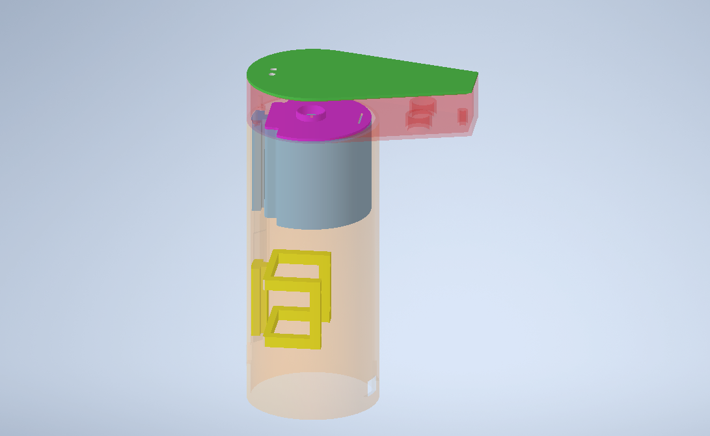
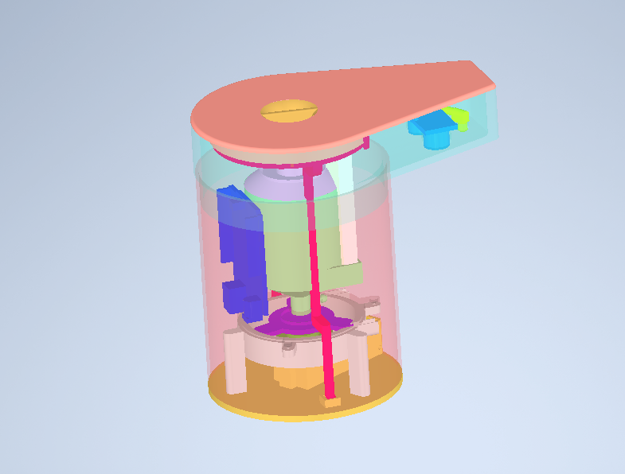
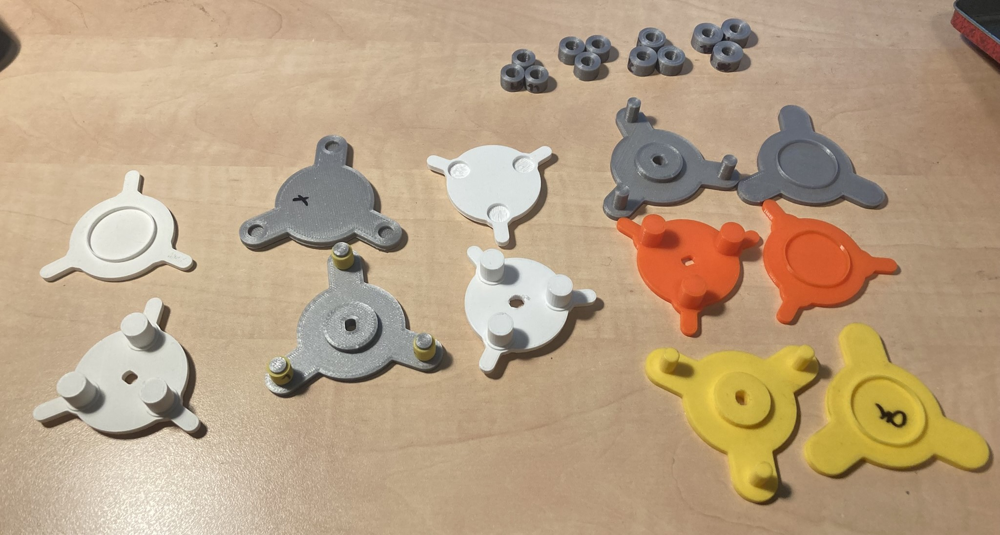
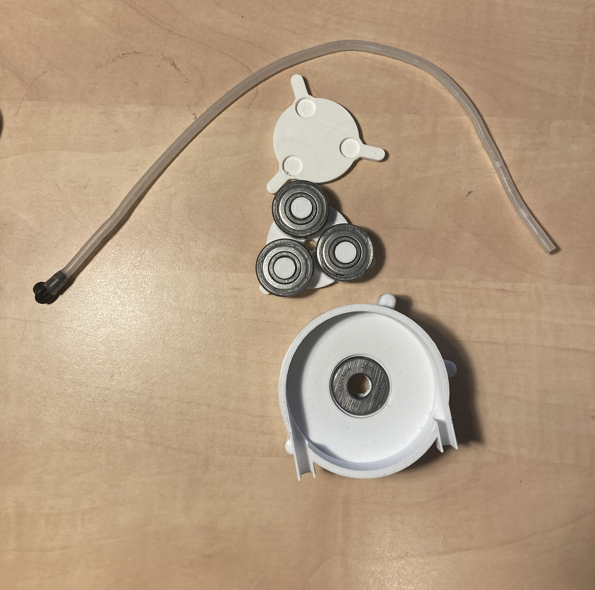
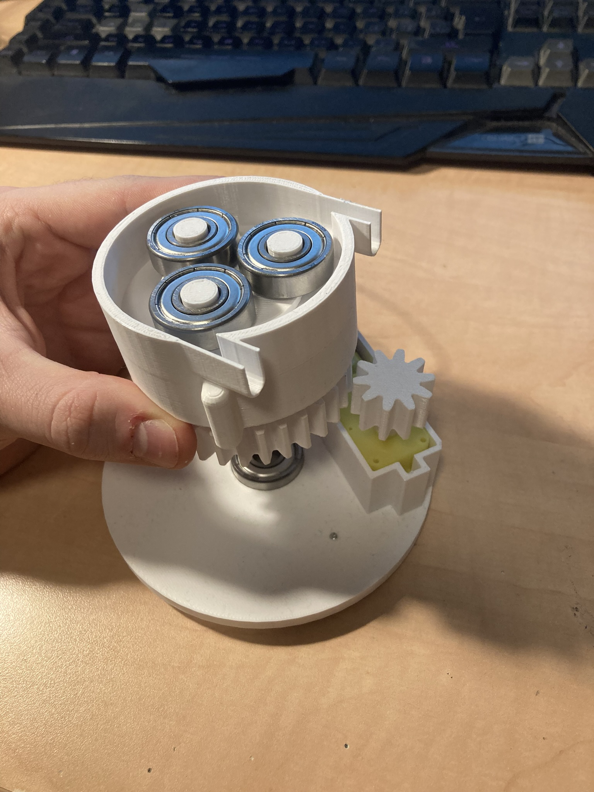
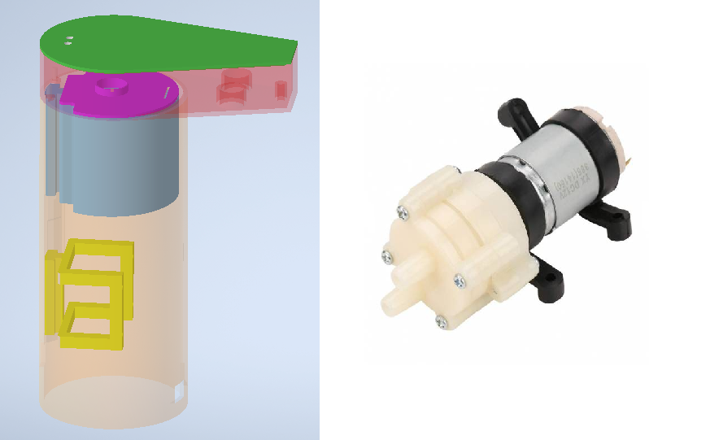
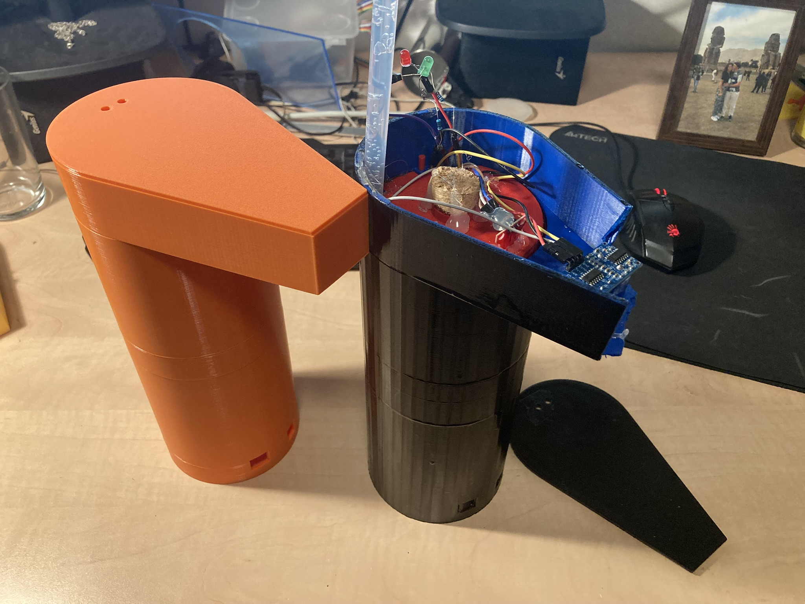
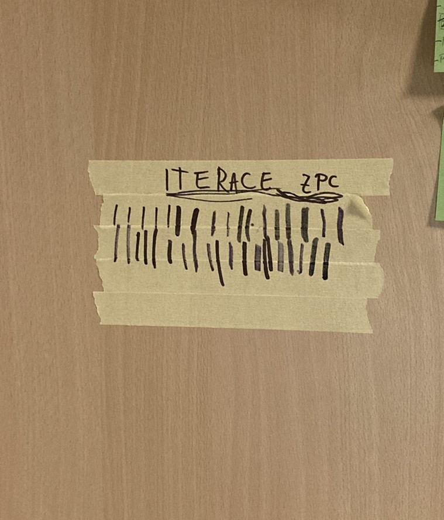

Jako závěrečný projekt jsem si zvolil bezdotykovou dezinfekci, která se spouští bezdotykově a hlídá si hladinu tekutiny v nádrži. Disponuje ochranou proti nežádoucím spustěním a odkapávací mističkou. Cílem bylo minimalizovat hmotnost, velikost a cenu komponent.
- Bezdotykové
- Chytré
- Miliony iterací
Technologie: 3D tisk, laserové řezání, arduino, pájení, lepení
První návrh vypadal jako úvodní obrázek na webových stránkách. Klapka která se odsouvá od hrdla a tím pouští tekutou dezinfekci. Po pár konzultacích a úvahách jsem ale odstoupil od tohoto řešení. Tento přístup selhal na nemožnosti utěsnit dávkování a přesné regulaci průtoku.
Dalším směrem, kterým jsem se vydal bylo vytvoření peristaltického čerpadla, které by z nádrže vytlačilo dezinfekci pomocí hadičky. Vytlačené množství by bylo regulované délkou doby běhu čerpadla místo úhlu, o který by se měl rotor v čerpadle otočit. Krokový motor však vyžaduje driver a další přebytečnou elektroniku, která by bránila mému cíli vytvořit malou, lehce přenosnou a levnou dezinfekci.
Zde je obrázek návrhu:  Zde jsem narazil na problém, že motorek, který jsem používal, měl nedostatečný výkon. Tření bylo příliš velké, protože se plastový rotor točil položený na plastovém dni bubnu.  Jako řešní jsem zvolil nahrazení plastových válečků ložisky. To se mi zdálo jako velmi dobré řešení. Místo plastových válečků dám nejmenší radiální ložiska, zmenším poloměr na co nejmenší, že se ložiska budou skoro dotýkat. Celé to položím na axiální ložisko, které výrazně zvedne účinnost, protože se mi nebude třít plast o plast. I za cenu zvýšení hmotnosti rotační části, axiální ložisko značně pomohlo. Tímto vylepšováním jsem strávil 6 týdnů. Zde je obrázek sestavení bubnu.  Tento přístup mě přiblížil, čerpadlo se navolno otáčelo, ale po zavedení hadičky v ní tekutina vystoupala jen minimálně - čerpadlo bylo slabé. Pořád jsem se bránil zavedení silnějšího motoru, který by vyžadoval nové, větší a drahé litiové baterie. Tak jsem přišel s dalším řešením. Zpřevoduji výstup motoru ozubenými koly.  Ozubená kola pomohla, ale pravděpodobně hodně energie mizelo do tření mezi zuby. Tady jsem osobně dost bojoval, protože to byla moje první zkušenost s tiskem ozubených kol. Nevěděl jsem, jak malé zuby si mohu dovolit. Volil jsem tím pádem ne tak efektivní velké zuby.
V tenhle moment jsem se na konzultaci dohodl, že opustím myšlenku tisku vlastního čerpadla a nějaké koupím. Čas se chýlil k 75% a já neměl ani funkční vnitřek. Koupil jsem si tak membránové čerpadlo, které bylo malé a splňovalo elektrotechnické požadavky - dá se napájet 3-12V, což je perfektní s mojí 9V baterií. Také bylo potřeba přemodelovat celé tělo dezinfekce. Zde je obrázek, s čím jsem přišel.  Cesta k tomuhle návrhu nebyla ale tak přímočará.
 Prvně vzniklo zelené tělo, které po vytisknutí bylo větší, než jsem si myslel. Tak velký průměr jsem zvolil, protože jsem chtěl určitou minimální tloušťku stěny v nejtenčím místě. Problém byl, že jsem
vkládal čtverec do kruhu. Přistoupil jsem tedy na fialový, kruhový model. Tím jsem mnohonásobně zmenšil spotřebu materiálu a rozměry těla. Tento model jsem ale nepoužil, protože se do něj nevešla všechna
elektronika.
Prvně vzniklo zelené tělo, které po vytisknutí bylo větší, než jsem si myslel. Tak velký průměr jsem zvolil, protože jsem chtěl určitou minimální tloušťku stěny v nejtenčím místě. Problém byl, že jsem
vkládal čtverec do kruhu. Přistoupil jsem tedy na fialový, kruhový model. Tím jsem mnohonásobně zmenšil spotřebu materiálu a rozměry těla. Tento model jsem ale nepoužil, protože se do něj nevešla všechna
elektronika.
Na obrázku jde vidět i žlutý horní díl, který má v sobě otvor na čidlo na zaznamenání pohybu ruky. Dalším dílem je žlutá nádoba, do které by se dala dezinfekce, hladinový senzor a zalepila by se víčkem s otvorem na dolévání. Posledními díly jsou držáky čerpadla ve žluté a fialové variantě.
Zde už jsem se dostal na správnou vlnu. Vytiskl jsem si tělo ze dvou dílů, protože je samo o sobě moc vysoké na běžnou tiskárnu. Zapojil jsem elektroniku, napsal program a vše sestavil. Výsledkem byl první funkční prototyp (video nebylo zamýšleno na tento web, omluvte kvalitu :) ) Později jsem chtěl jen nabarvit povrch tak, aby byl stejné barvy a dobře vypadal. Jako barvu jsem si vybral černý spray. To byla chyba. Na starých modelech jsem vyzkoušel, že barva dobře drží. Na těle nového prototypu ale dobře nedržel. Kvůli špatné kvalitě souborů se mi válcové tělo tisklo jako polygon a na hranách spray nedržel. Výsledkem byl černý povrch s barevnými svislými pruhy. V domnění, že to zachrání další vrstva, se na povrchu vytvořily kapky a kvůli nízké okolní teplotě v lednové garaži skončil projekt v katastrofálním stavu.
Záchrana byla jen vytisknout tělo v jedné barvě a u toho zvednout kvalitu souborů, abych tiskl válec a ne hranol.
A to nás dostává tam, kde jsem teď. Projekt funguje, jen je potřeba přenést vnitřek do nového těla.
Zde je fotka:  Celek tedy funguje tak, že se zapne centrálním spínačem. Senzor zaznamená ruku a spustí čerpadlo na krátký časový úsek. Dezinfekce kapne na ruku a spustí se časová ochrana, která čeká na oddělání ruky z prostoru senzoru. Po odejmutí ruky se odpočítá časová ochrana a cyklus se může opakovat. Senzor hladiny u toho souběžně hlídá stav v nádrži a svítí zeleně, když je plná a červeně, když by dezinfekce měla dojít. Je to ale jen upozornění, nádrž totiž má rezervu a ještě několik desítek cyklů vydrží. Obvod je jištěn flybyck diodou, která slouží k ochraně elektronických součástek před napěťovou špičkou, která vzniká při vypnutí zátěže. Za poslední zmínku stojí dvě díry v přední části trupu. Ty slouží pro připojení na případnou změnu kódu nebo na připojení zdroje při vybití integrované baterie.
Zde je pro zajímavost moje počítadlo vylepšení :) 